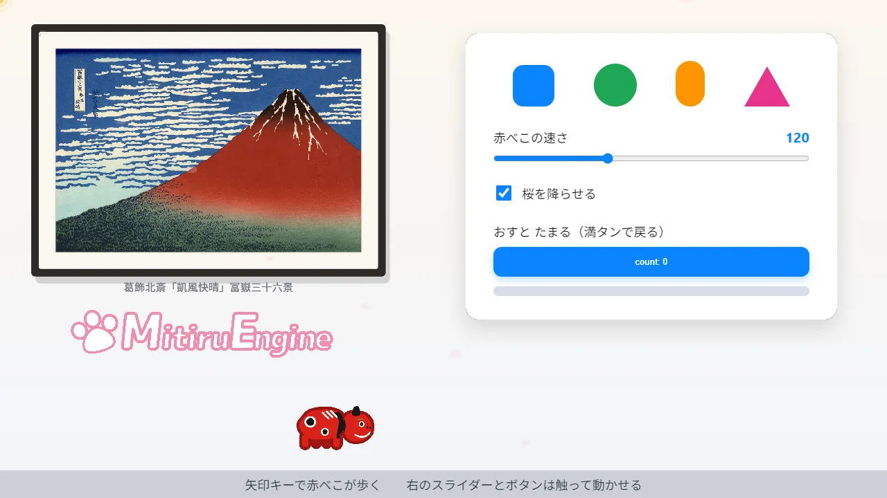

MitiruEngine
MitiruEngineINSTALL
インストールして動かす
Windows 10 / 11 で MitiruEngine を導入し、ゲームのひな形を起動するまでの手順です。制作では、主に C++ と HTML / CSS を編集します。Linux / Mac は今後対応予定です。
3 ステップで起動
すでに導入されている項目は自動で省略されるため、インストーラーは複数回実行できます。
-
zip を展開する
最新リリースから zip をダウンロードし、任意の場所に展開します。
-
installer.exeを実行するMSVC Build Tools、CMake、Windows SDK、
mitiruコマンドを導入し、PATH を設定します。自分で管理する場合は、Build Tools を手動で導入し、mitiruへの PATH を設定する方法もあります。 -
プロジェクトを作成する
PATH の変更を反映するため、新しいターミナルを開いて次のコマンドを実行します。
installer.exe を実行します。続いて、mitiru new でプロジェクトを作り、mitiru run で起動します。# 新規プロジェクトを作成して起動
mitiru new my-game
cd my-game
mitiru runゲームのひな形がウィンドウで起動します。mitiru run はビルド後に 1 回起動するコマンドです。制作中は mitiru watch を使うと、保存のたびに自動で再ビルドし、ゲームを止めずに変更を反映できます。

mitiru new の既定画面です。額装した赤富士、ロゴ、矢印キーで歩く赤べこ、舞い落ちる桜は C++ で描画します。右側の図形、スライダー、チェック、ボタン、ゲージは HTML / CSS です。値は HTML と C++ の間を往復し、接続用の JavaScriptを書く必要はありません。初回ビルドには 5〜10 分かかります。
HTML UI 用の CEF ラッパライブラリと、header-only のエンジン本体を一度だけコンパイルします。Chromium 本体にはビルド済みのものを使います。2 回目以降は数秒です。
エディタは Visual Studio、VS Code、Vim、メモ帳などを利用できます。問題が起きた場合は、mitiru doctor で環境を診断できます。
サンプルだけを確認する場合は、展開した zip にある MitiruEngine_Launcher.bat をダブルクリックします。一覧から選んで起動でき、コンパイラは不要です。
編集する 2 つのファイル
mitiru new で作成される主なファイルは、src/ にある C++ と、assets/ にある HTML の 2 つです。C++ にゲームのルールを書き、HTML / CSS で画面を構成します。
初めて制作する場合は、C++ で作る初心者ガイドから始められます。赤べこの横スクロールゲームを 1 本作る内容で、難しい文法は扱いません。
C++ で状態と処理を書く
状態を struct にまとめ、毎フレームの処理を update に書きます。入力は in.down(...) で読み、画面へ渡す値は hud.set(...) で送ります。
#include <mitiru.hpp>
using namespace mitiru;
struct MyGame {
float x = 600;
int score = 0;
// 毎フレーム、入力を読み、状態を更新する
void update(Input in, Hud hud, float dt) {
if (in.down(Key::Right)) x += 320 * dt;
hud.set("view.hud.score", score);
}
void draw(Screen& screen) {
screen.drawRect({x, 320, 48, 48}, {1, 1, 1, 1});
}
};
MITIRU_GAME(MyGame) // DLL の入口を作成HTML / CSS で画面を書く
C++ から送った値は data-m-text で受け取り、画面へ表示します。接続用の JavaScript を自分で書く必要はありません。詳しくは画面（HTML / CSS）で確認できます。
<div class="hud">
SCORE <span data-m-text="view.hud.score">0</span>
</div>
<!-- エンジン付属の処理で C++ の値と画面を接続する -->
<script src="mitiru_runtime/mitiru_cef_state.js"></script>
<script src="mitiru_runtime/mitiru_bind.js"></script>起動する
mitiru run でビルドして起動します。制作中は mitiru watch を使うと、保存した変更を自動で反映できます。
mitiru run容量と速度の実測値
ゲームのコードは約 0.2 MB の DLL になります。エンジン本体は header-only で、コンパイル時にゲーム側へ組み込まれます。別の engine ライブラリを配布する必要はなく、成果物はゲームの DLL とエンジン実行環境です。
0.2 MB
ゲーム本体の DLL。エンジン本体もコンパイル時に組み込まれます。
30 MB
HTML UI を使わないネイティブ実行環境。Chromium は含みません。
305 MB
HTML UI を使う構成。CEF と Chromium 一式を含み、libcef.dll は 211 MB です。
60 fps
ウィンドウ表示と GPU 描画を、各サンプルで確認しています。
HTML UI の有無で構成を選ぶ
ネイティブ[cef] enabled = false |
ゲーム本体の DLL、実行環境、DirectX のシェーダコンパイラで構成します。Chromium は含まず、約 30 MB です。 |
| HTML UI あり CEF 使用 |
ネイティブ構成に、HTML / CSS の描画に使う CEF と Chromium 一式を加えます。約 305 MB です。 |
| ダウンロード用 zip | 両方の構成、CLI、サンプルを 1 つにまとめています。約 140 MB です。 |
| メモリ使用量 | ネイティブ構成は約 180 MB、HTML UI ありの構成は約 360 MB です。差は Chromium の使用分です。 |
CEF とは
Chromium Embedded Framework の略称で、Chromium をアプリへ組み込む技術です。MitiruEngine は、メニューや HUD をブラウザエンジンで描画するため、CSS の影、グラデーション、アニメーションを利用できます。
HTML UI を使う構成では Chromium の容量とメモリが必要です。HTML UI を無効にすると Chromium 一式が外れ、約 30 MB の構成になります。
実行時の設計
- ウィンドウ表示と GPU 描画は 60 fps で動作し、各サンプルで確認済みです。
updateと描画ループは、毎フレームのメモリ確保さないゼロアロケーションを設計ルールとしています。- AI 自動テスト用のヘッドレス実行は CPU 描画です。決定的に実行されるため、同じ入力には同じ結果が返ります。